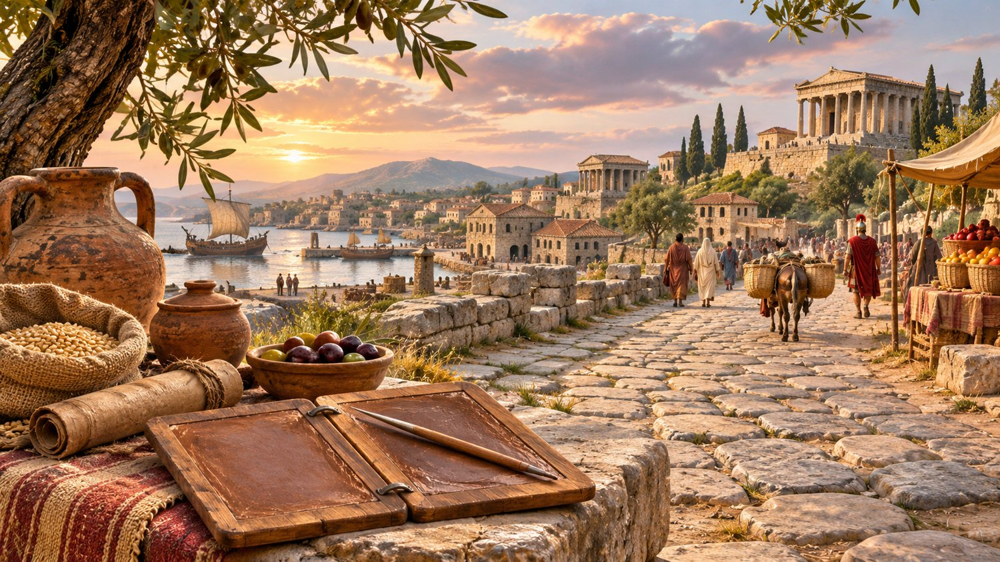

De eerste eeuw: ontmoetingen en nieuwe gemeenschappen
Een reis langs het jodendom, de eerste christelijke gemeenschappen, het Romeinse rijk, Afrika, India, China en het oude Amerika.

Een wereld met veel verschillende stemmen
Het begin van onze jaartelling ligt niet aan het begin van het geloof of de beschaving. Al duizenden jaren hadden mensen rituelen, verhalen, teksten en heilige plaatsen. De eerste eeuw, van 1 tot 100 n.Chr., was in verschillende delen van de wereld een periode waarin gemeenschappen zich verder ontwikkelden.
Er bestaat geen jaar nul tussen 1 v.Chr. en 1 n.Chr. Bovendien zijn veel oude gebeurtenissen niet tot op een precies jaar te dateren. Historische zekerheid is niet hetzelfde als wat een bepaalde traditie over haar eigen geloof vertelt.
Het jodendom: een levende traditie met verschillende stromingen
In Judea leefden mensen onder Romeinse invloed en bestuur. Het religieuze leven kende vele vormen: tempelrituelen in Jeruzalem, gebed, schriftstudie, feesten en onderlinge discussies. De verschillende joodse groepen dachten niet over alles hetzelfde. Dat laat zien dat een oude religieuze traditie nooit alleen uit één mening bestond.
In het jaar 70 verwoestten Romeinse troepen de tweede tempel in Jeruzalem. Dit was voor joodse gemeenschappen een ingrijpende gebeurtenis. Het religieuze leven verdween niet: studie, gebed en gemeenschapsvorming bleven bestaan en kregen later andere vormen. Het rabbijnse jodendom ontwikkelde zich verder in de eeuwen erna.
Jezus van Nazaret en het vroege christendom
Jezus leefde in deze eerste eeuw als Jood in de wereld van zijn tijd. Zijn leven en de betekenis van zijn dood worden in christelijke geschriften verteld vanuit verschillende geloofsperspectieven. Historici plaatsen zijn dood meestal rond het jaar 30, maar over het exacte jaartal bestaat geen volledige zekerheid.
Na zijn dood groeiden groepen leerlingen. De oudste bewaard gebleven christelijke teksten behoren grotendeels tot de brieven van Paulus uit het midden van de eerste eeuw. Daarin komen vragen naar voren over de relatie tussen Joodse en niet-Joodse gelovigen, de betekenis van Jezus en de manier waarop mensen samenleven.
De evangeliën kregen in de loop van de eerste eeuw en deels daarna hun geschreven vorm. Wie de historische context onderzoekt, hoeft daarom niet te doen alsof alle teksten op dezelfde dag zijn opgeschreven of alsof alle eerste christenen meteen op alle punten hetzelfde dachten. Ook de oorspronkelijke joodse achtergrond verdient respect.
Rome, de Middellandse Zee en Afrika
Steden rond de Middellandse Zee waren met elkaar verbonden door wegen, havens en handel. Mensen vereerden plaatselijke goden, namen deel aan publieke rituelen, herinnerden hun voorouders en kenden feesten binnen hun families en gemeenschappen. Romeins bestuur betekende niet dat overal één religie heerste.
Egypte maakte deel uit van het Romeinse rijk. Verder zuidelijk had het koninkrijk Koesj, met Meroë als belangrijk centrum, zijn eigen politiek en rituele tradities. Archeologische vondsten tonen heiligdommen, voorstellingen, koninklijke gebruiken en begrafenisrituelen, maar vertellen ons niet wat elk individu geloofde. Overal leefden verschillende opvattingen naast elkaar.
India en Centraal-Azië: mensen en ideeën op reis
De Indiase wereld kende een rijk geheel aan religieuze en filosofische stromingen. Het boeddhisme, jaïnisme en uiteenlopende tradities die uit de Vedische wereld voortkwamen, leefden in verschillende gemeenschappen verder. Heiligdommen, kloosters, teksten en afbeeldingen vertellen over die veelzijdigheid.
Over land en over zee reisden goederen en ideeën. In de eerste eeuwen van onze jaartelling ontwikkelden boeddhistische beeldtradities en netwerken zich. Toch moeten we voorzichtig zijn met uitspraken alsof een geloof in één jaar of door één gebeurtenis een heel werelddeel veroverde.
China: de Han-dynastie en voorouderrituelen
China werd in deze periode voor een groot deel bestuurd door de Han-dynastie. Confuciaanse ideeën over plichten, onderwijs en goed bestuur waren belangrijk. Vondsten in graven getuigen van voorouderzorg en voorstellingen over het leven na de dood. Ook andere denkstromingen leefden voort.
Contacten via handelsroutes verbonden China met Centraal-Azië. Het boeddhisme begon langs zulke netwerken geleidelijk bekendheid te krijgen. De oudste dateringen zijn omstreden: latere boeddhistische gebouwen en scholen mogen niet zonder bewijs worden teruggeplaatst in het begin van de eerste eeuw.
Amerika: rituelen en steden met een eigen geschiedenis
In het gebied van het huidige Mexico ontwikkelde Teotihuacan zich tot een belangrijk stedelijk en ceremonieel centrum. De plaats kende al vóór de eerste eeuw bewoning en groeide in de eeuwen daarna sterk. De bekende monumenten werden in verschillende fasen gebouwd. We mogen hun huidige namen niet automatisch toeschrijven aan de oorspronkelijke bewoners.
Ook elders in Amerika bestonden eigen tradities. Deze samenlevingen waren in deze tijd niet verbonden met de Bijbelse of Chinese religieuze wereld. Archeologie laat zien dat ze rituelen en betekenissen aan hun omgeving gaven, zonder dat we ieder symbool vandaag met zekerheid kunnen verklaren.
Wat weten we en wat blijft een vraag?
Geschiedenis gebruikt teksten, voorwerpen, inscripties en opgravingen. Ze kan de wereld waarin mensen leefden onderzoeken. Maar uit een ruïne kunnen we niet zomaar afleiden of iemands geloof in de Schepper waar of onwaar is. Evenmin moeten oude verhalen worden voorgesteld als moderne nieuwsverslagen.
Een respectvolle studie houdt ruimte voor drie zaken: wat de bronnen werkelijk tonen, hoe gemeenschappen hun teksten begrijpen en wat jij er zelf over denkt.
💭 Vraag om zelf over na te denken
Welke gelijkenissen zie je tussen mensen in verschillende delen van de wereld? Kun je belangstelling hebben voor een geloofstraditie zonder je eigen overtuiging te moeten veranderen?
Je gedachten blijven privé.
Met je Lichtpunt-account kan het vinkje op meerdere toestellen worden bewaard.
Historische bronnen en verder lezen
- Oxford – chronologie jodendom en christendom
- Metropolitan Museum of Art – Han-dynastie
- Metropolitan Museum of Art – Zuid-Azië, 1–500 n.Chr.
- British Library – boeddhisme op de Zijderoutes
- UNESCO – Teotihuacan
De afbeelding is een artistieke impressie. Historische bronnen geven context, niet één verplichte religieuze verklaring.